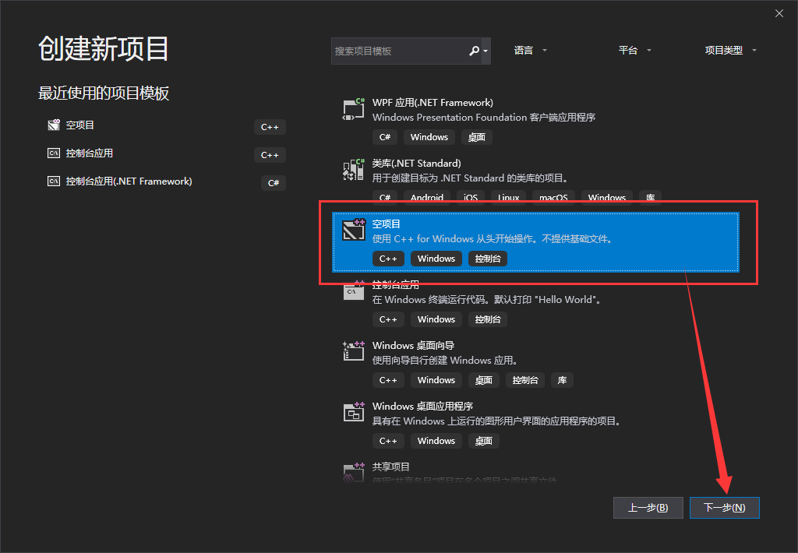
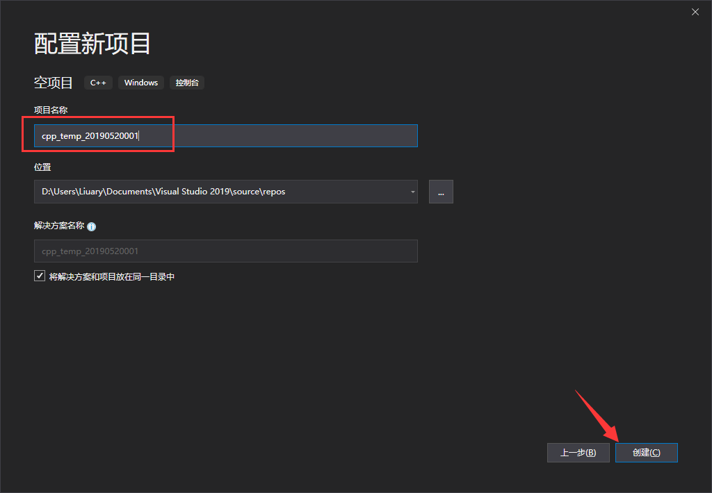
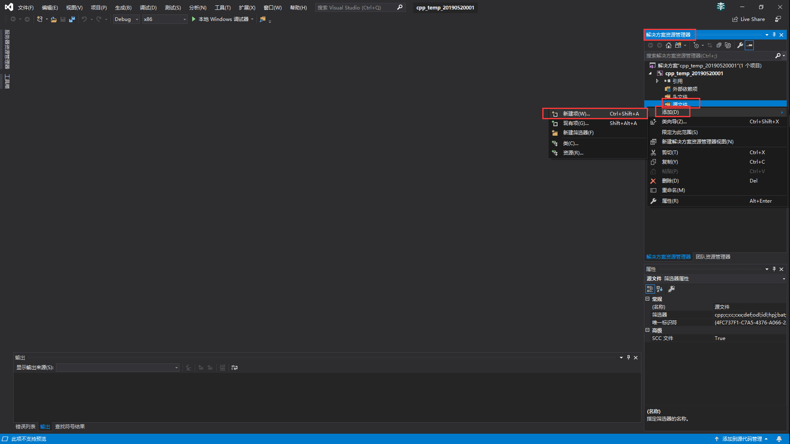
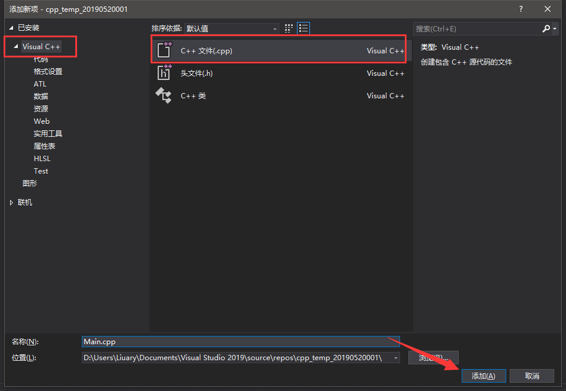
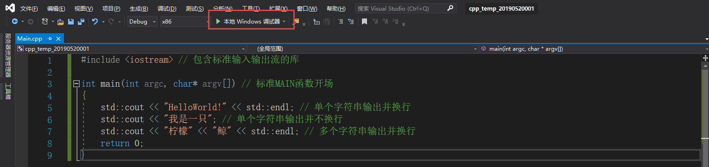
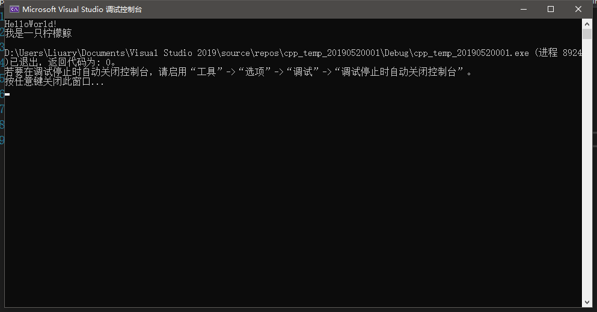
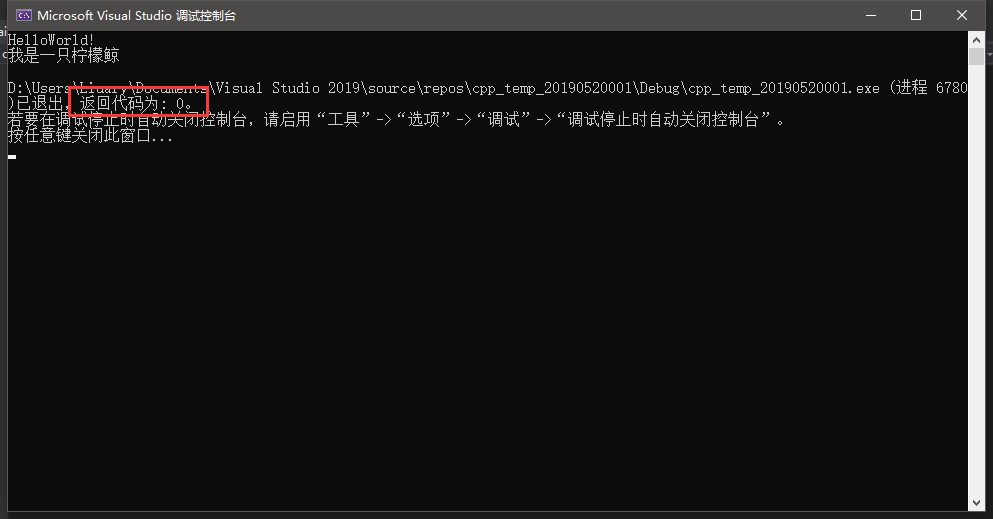

C++系列教程现在在自己学校的一个博客平台发布，几个朋友一起搭建的
[C++基础教程系列](https://blog.ytmaxoj.org/cpp_basic_liuary-0/)
下面是原来的正文
大家好啊，一年一度的柠檬节——额，好像不止一度的柠檬节，它又到了！在这个悲伤的日子，我决定开启一个C++的教程，主要是为了复习自己的C++知识，另外顺便给新手们一个了解C++的方向。
本教程主要面向C++初学者，如果你先前学过C语言或者Java，学起来将会比较轻松一点。
C++是C语言的继承，它既可以进行C语言的过程化程序设计，又可以进行以抽象数据类型为特点的基于对象的程序设计，还可以进行以继承和多态为特点的面向对象的程序设计。
在我真正接触编程之前，我向往的一直是Java，因为当时喜欢玩Minecraft，而Minecraft的mod开发需要用到Java，然而在我认识了C++以后，我再也不想碰Java了。
C++的好处和坏处此处也不科普，自行百度。
废话少说，正片开始。
一、创建一个C++项目
虽然我不是很喜欢MS的VS，但不得不说这玩意确实很好用。另外Visual Studio的颜值确实高，虽然我更喜欢Vs code，但是VS code用GNU GCC编译的C++程序中文乱码太烦了，所以还是直接用了VS2019进行C++的开发。
第一步，打开Visual Studio，单击创建新项目。
第二步，选择空项目并点击下一步。

第三步，为项目起个名字、设定位置并且点击下一步。

这样我们就生成了一个空项目。
第四步，在解决方案资源管理器中的 项目名>>源文件 文件夹上右键 添加>>新建项 。

第五步，在 添加新项窗口中左侧点击Visual C++，选择中央的 C++文件，起个名字然后点击添加。

二、HelloWorld!我是一只柠檬鲸
第一步，在代码区输入以下内容：
1 #include <iostream> // 包含标准输入输出流的库
2
3 int main(int argc, char* argv[]) // 标准MAIN函数开场
4 {
5 std::cout << "HelloWorld!" << std::endl; // 单个字符串输出并换行
6 std::cout << "我是一只"; // 单个字符串输出并不换行
7 std::cout << "柠檬" << "鲸" << std::endl; // 多个字符串输出并换行
8 return 0;
9 }第二步，选择Debug X86 ，并且点击本地Windows调试器。

第三步，控制台窗口弹出，显示输出结果。

PS：如果出现编译问题，先检查代码是否正确，然后仔细对照我前面的操作，看看是否有出入。
三、代码分析
第一行：
1 #include <iostream>
include是一个计算机专业术语，一指C/C++中包含头文件命令，用于将指定头文件嵌入源文件中。效果等同于将后面括号内包含的文件的全部内容在#include的位置全部写一遍。
iostream的意思是输入输出流，直接点说就是in（输入） out（输出） stream（流），取in、out的首字母与stream合成。这个库的作用就是让你能够在控制台进行输入输出。
第二行：
1 // 这是一个空行
第二行打个空行纯属个人爱好，因为我觉得这样看起来更好看一些。
第三行：
1 int main(int argc, char* argv[])
首先我们要知道这个是一个函数，形式上类似数学中的函数，如：f(x) = x + 1，f(1) = 2;
int 表示返回类型是整型，整型表示某变量或常量里面的值只能是整数而不能是小数或者文本等。意思就是后面这一串代码最终会变成一个数字。就像是上面提到的数学函数，f(1)其实最终是一个2。
main 是这个函数的名字。main是C/C++程序的入口，程序从main处开始运行。函数名的意义就类似数学中，f(x),g(x)等，函数名不同，一般其函数（表达式）也不同。
(int argc, char* argv[]) 是函数的参数列表，就类似于 f(x) 中的 x ，就是向函数传递的值。在C++原生代码中，int argc, char* argv[] 不是必须的，也就是说你可以只写一个 int main()，但是建议加上，因为学习某些库多半要用到。
第四、九行：
1 { 2 // 函数体 3 }
我们可以看到main函数后面的内容都被一对花括号{}包裹，这对花括号包含的内容就是函数体，就像是之前的数学函数的例子， f(x) = x + 1, 其中 x + 1 就是函数体。
第五行：
1 std::cout << "HelloWorld!" << std::endl;
std 在C++语言中，std其实就是standard标准的意思。std是C++预置的一个命名空间，其中包含了许多必要的函数，比如cout、cin、string，你可以在你的代码之前加上
1 using namespace std;
这样就可以直接使用cout、cin等函数，而不需要std::cout、std::cin。
命名空间，也就是namespace的作用是划定一块区域，用来定义变量等等，然后这些变量只在这片区域有效，离开这片区域必须使用预作用符，比如std::cout，这样就有效避免因为变量名相同导致代码冲突的问题，因此并不建议使用using namesapce，因为可能导致重复定义。
std::cout 的作用是在控制台打印输出后面所有被<<限定的内容，直到本行结束。std::cout本身不换行，因此存在std::endl用来换行，而std::ends可以打出空格。
分号的作用是一行代码的结束。
后面两行的意思相差不大，因此不再赘述。
第八行：
1 return 0;
这一行的意义是函数最终返回了一个值，就像之前的f(1)最终等于2，这里返回一个0，意思是当函数结束，就返回一个0。犹豫在这个例子中，和main函数对接的是控制台，因此返回的0会在控制台出现。

如果你return设置为1，那么返回的就是1，只要你设定的返回值符合返回类型，都可以返回对应类型的值。
return是十分重要的功能，不可忽视，因为后面运用到函数，都需要返回值来进行相应操作。
C++的第一课就这样吧，希望大家能够学到一些知识，如有错误，大佬请指正，谢谢。